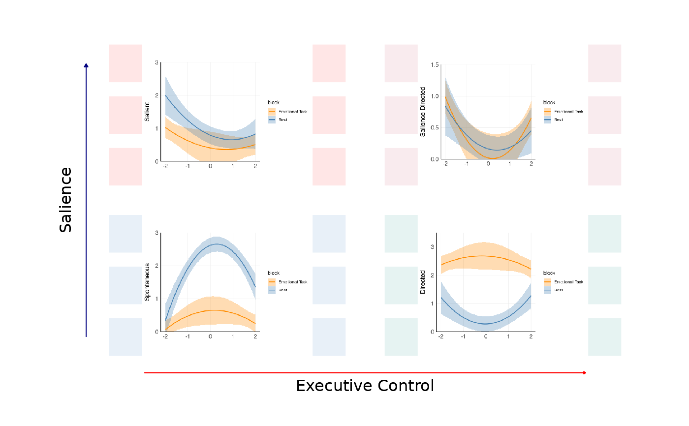

Default theme for subplots in a ThinkingGrid 2x2 quadrant plot.
Source:R/plot_2x2.R
default_inner_theme.RdThe default theme settings for the subplots of a 2x2 quadrant plot. In order to display correctly, the important properties of the theme are:
The background are set to transparant elements.
The main plot titles and legends are removed. (Axis labels are kept.)
The aspect ratio is set to 1.00.
Margins are adjusted to set the plot within the background squares.
Examples
plots <- ThinkingGrid:::create_test_2x2_plots()
p1 <- plots[[1]]
p2 <- plots[[2]]
p3 <- plots[[3]]
p4 <- plots[[4]]
# Here we can customize the theme.
itheme <- default_inner_theme(inner_margin = 10)
# This is the usual syntax.
thinkgrid_quadrant_plot(p1, p2, p3, p4, inner_theme = itheme)
